固定39 学習ヘッダー・実経路画像
7ケースの実UI由来PNGを元bytesのまま配置。画像の編集・合成・切抜きなし。表示サイズだけCSSで調整。
app: workshop-20260909-b3f96489e126 / world v17 / learning-header-v1。宣言した初解放直前fixtureから実21正答、追加の誤答1回・ヒント2回。Human N=0。正式80run・関連E2Eはこの記録の範囲外。
説明 · 数値・原画像SHA・保存範囲
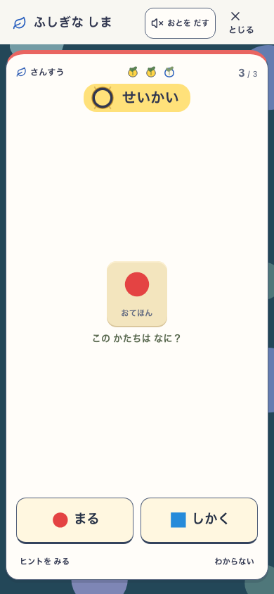
phone 選択式：解放直前の3問目
phone-east-last-question.png
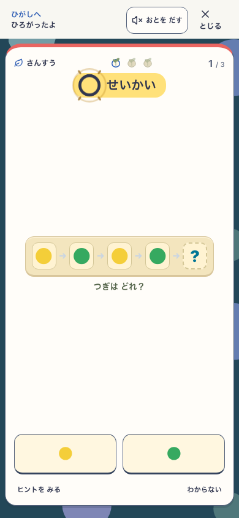
phone 東解放：次予約の入力中に2行通知
phone-east-notice-next-input.png
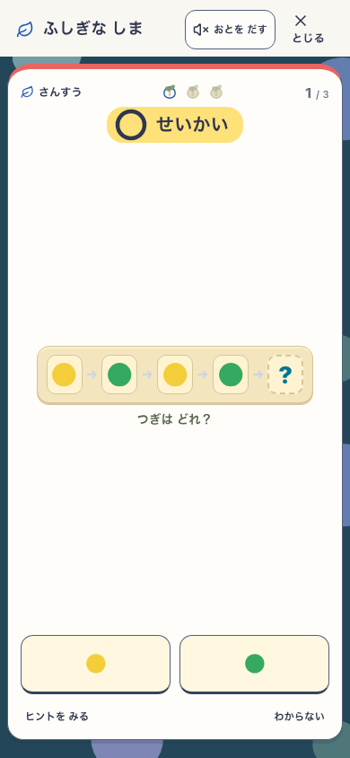
phone 同じ問題：5994.7msで通知だけ消失
phone-east-expired-same-input.png
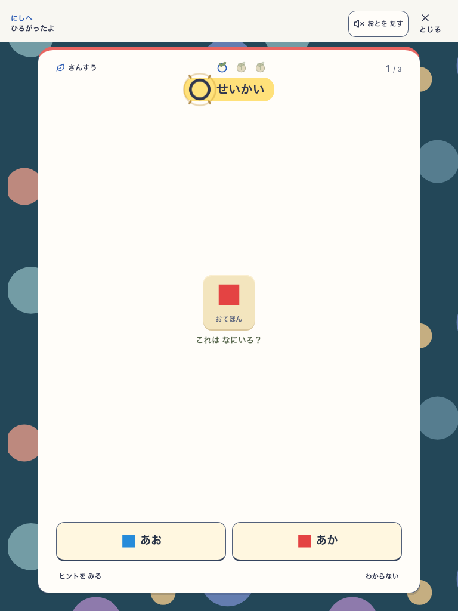
tablet 西解放：元ヘッダー内の2行通知
tablet-west-notice-next-input.png
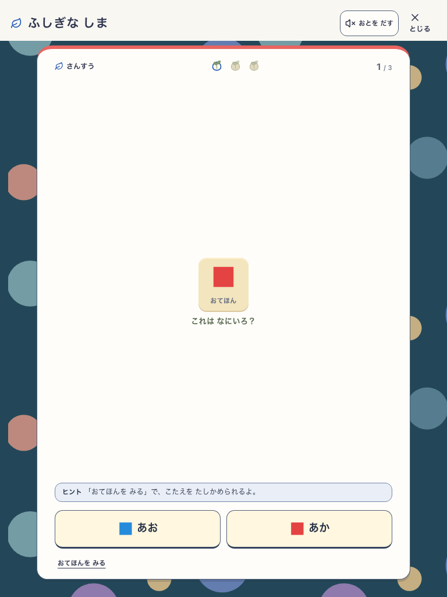
tablet 同じ問題：ヒント優先で通知を退避
tablet-west-hint-priority.png
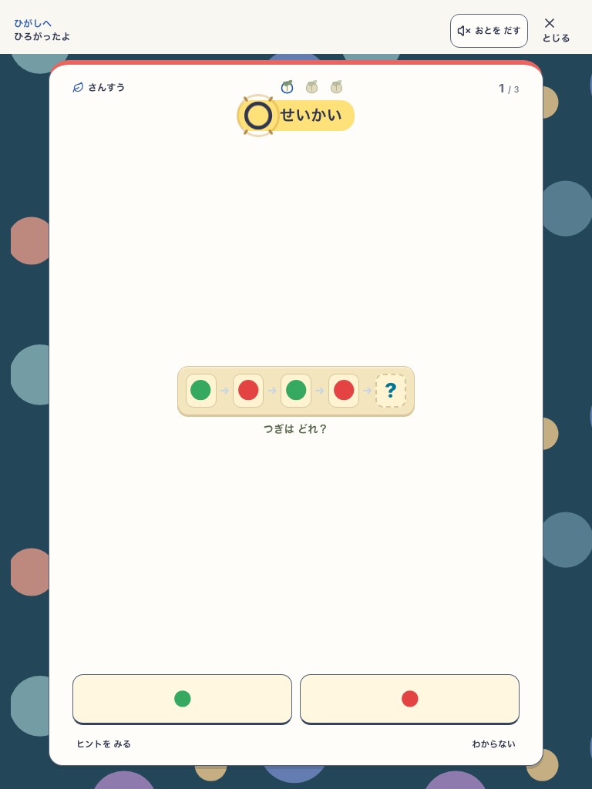
tablet 東解放：誤答操作の直前
tablet-east-notice-next-input.png
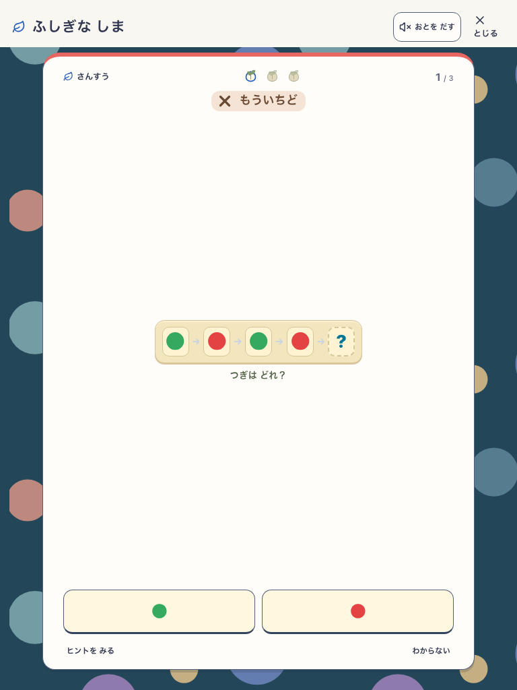
tablet 同じ問題：誤答後の「もういちど」優先
tablet-east-incorrect-priority.png
 tablet 同じ予約へ再入場：通知の再演なし
tablet 同じ予約へ再入場：通知の再演なし
tablet-east-reentered-no-replay.png
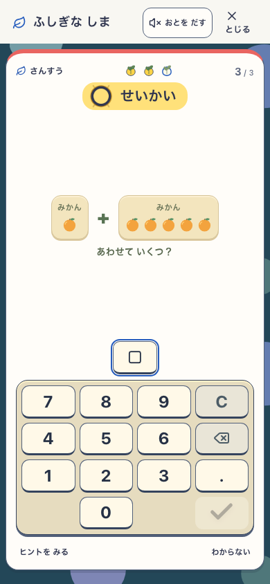
phone 数字：実plannerの3問目
phone-tenkey-east-last-question.png
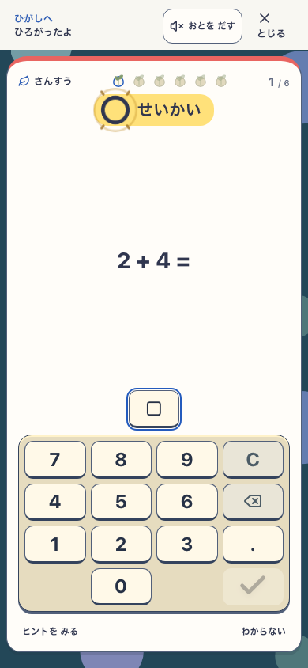
phone 数字：次の6問予約・TenKeyと通知が共存
phone-tenkey-east-notice-next-input.png
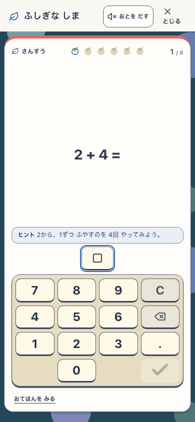
phone 数字：ヒント表示を優先
phone-tenkey-east-hint-priority.png
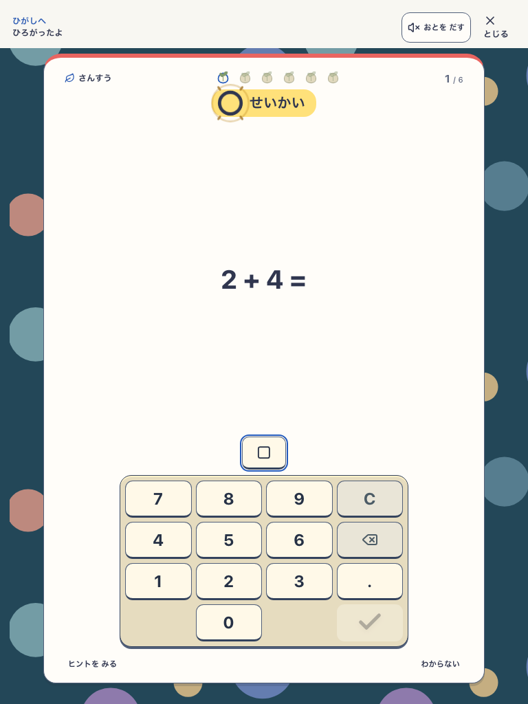
tablet 数字：実TenKeyと通知が共存
tablet-tenkey-east-notice-next-input.png
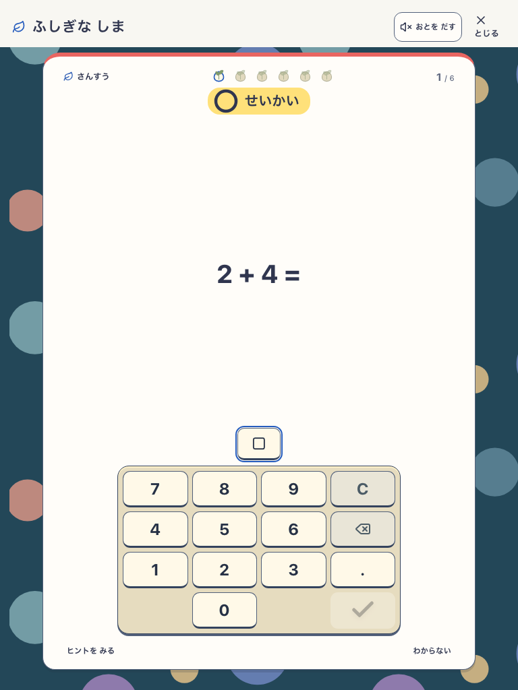
tablet 同じ数字問題：5998msで通知だけ消失
tablet-tenkey-east-expired-same-input.png
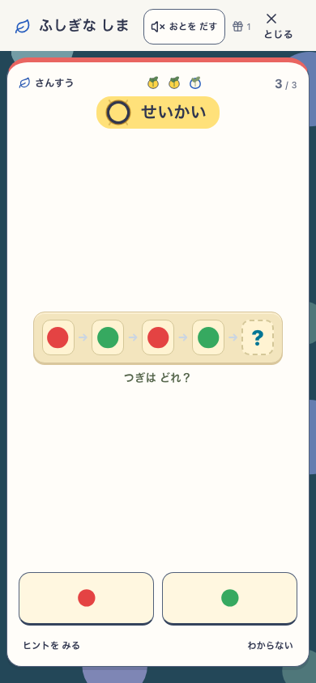
phone 明示fixtureの旧おくりもの1件・解放直前
phone-east-gifts-last-question.png
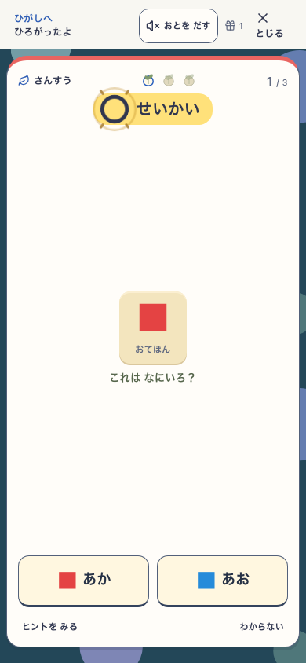
phone 旧おくりもの1件：通知と右側操作が非重複
phone-east-gifts-notice-next-input.png
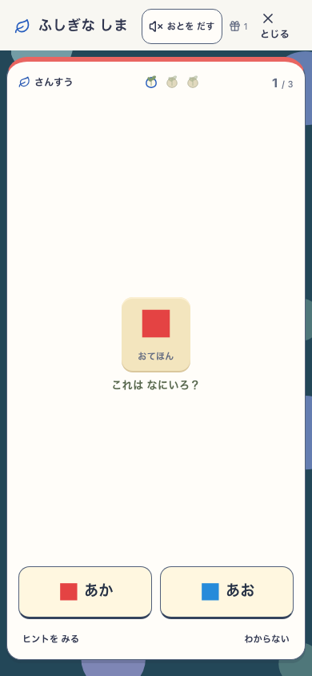
phone reload：同じ問題・旧おくりものを保持、通知なし
phone-east-gifts-reloaded-no-replay.png